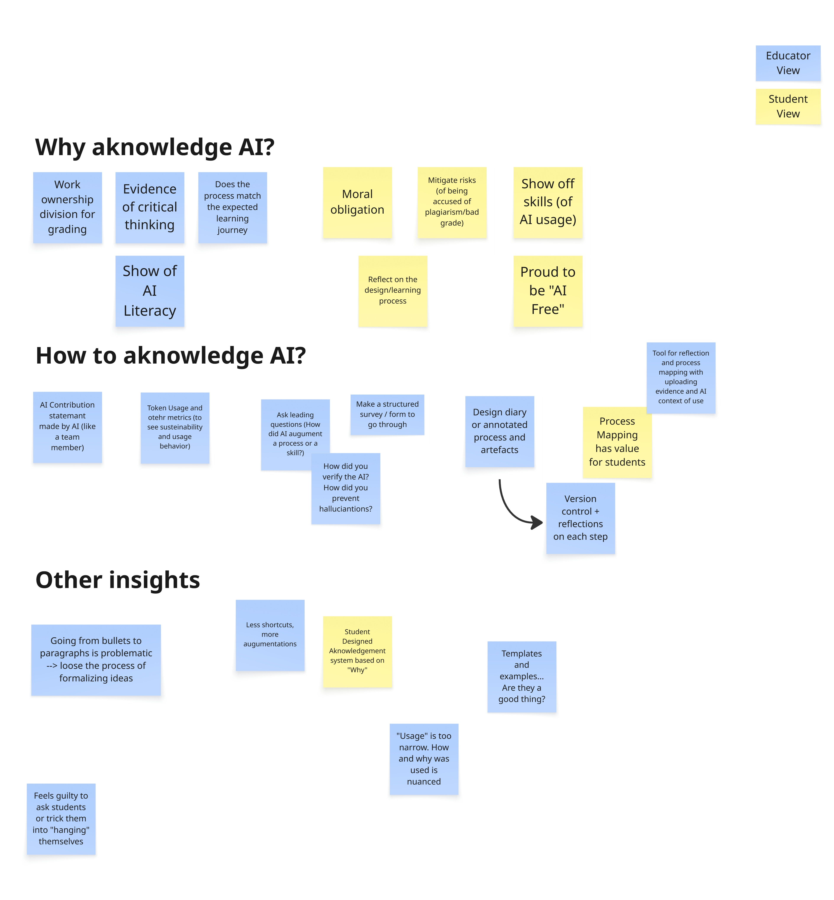

Current AI acknowledgement practices in design education are often treated as a formality. They are easy to copy-paste and hard to make meaningful.
Acknowledgement should be evidence of critical thinking, not just a disclosure checkbox.
Students should feel they “are getting something out of writing the AI statement”
The most promising direction is shifting from statements to process artifacts (e.g., annotations, design diaries, version histories) that make the student's reasoning visible and gradeable.
Activity Format
How many people? What sort of activity?
A focused breakout discussion with 5 participants: 2 educators, 1 postdoc, and 2 PhD researchers. Two participants were part of the Examination Committee of the TU/e. The session started with the question “How are we currently doing this, and is it working?”
The session took the format of an open discussion, where the participants mapped their current practices, then moved towards brainstorming why educators want an AI statement and why students would want one. Based on the identified WHYs, participants brainstormed ways that could connect the goals of teachers and students and different shapes in which “AI Collaboration” could be documented and disclosed.
Outcomes
Goals
The group identified three reasons educators ask students to acknowledge AI, which often get conflated:
To understand what is actually being graded (did the student do the thinking, or did AI?)
To have evidence of an (envisioned) learning process being followed
To have evidence of critical thinking and autonomy
Additionally, seeing the AI Literacy level of students could also be done through the AI Statements.
The group speculated on five reasons students would find it valuable to acknowledge AI:
They would feel a moral obligation to disclose how the work division happened in the project (Author note: we know this is idealized, and the group felt the same, but we still feel this covers a few student cases in our practice)
To mitigate the risks of being wrongly accused for AI use, to increase transparency in view of grading
To show off their creative skills of using AI as something that augmented their process
To show off their pride in having an “AI-free” process
To capture a (considerable) part of their design process in an artifact that can be reflected on for learning
These different student and educator goals call for different approaches, and are currently underserved by the text based statements that follow a generic template.
Methods
Several useful formats emerged from the discussion:
annotated process documentation where students mark critical decision points;
annotated posters of coding artefacts that showcase how AI was used;
version control history (e.g. in creative coding contexts) used as a reflection artifact;
ask students to keep a design diary or workbook that functions as a chronological record of key choices made throughout a project;
a platform where “versions” of projects can be uploaded together with reflections at that point in time, which would lead to a summarized “version-based” reflection in the end;
computing usage metrics on (local) AI models: tokens, chats, energy draw etc.
Principles
From a higher level, several principles were discussed:
treat AI acknowledgement the way you would crediting a collaborator, switch from "did you use AI?" to "how did AI augment you?" and "how did you validate what it produced?";
this is not about binary use cases, but about the nuance of the use, showcasing critical thinking and autonomy;
be critical about the common workflow of “going from bullet points to paragraphs,” as students lose the skill of formalizing ideas in this process;
involve students in the process of designing these new procedures.
The process of writing acknowledgements needs to feel less adversarial. Educators do not want to feel like they are “tricking” students into providing evidence against themselves.

Figure 1. Results of the brainstorm on Acknowledging AI
What can you do right now
You can run a workshop with your teaching team, where you define what the most important aspects are to capture in an AI statemant. You can also run a workshop with students to see what is relevant for them in this case.
You can pick one alternative way to document AI collaboration (e,g., workbook, version control, weekly reflections, chat metrics) and run with it in your next course, then reflect on how it went.
Future directions
From this session, it became clear that we need to involve students in this discussion. They have insights into how to make this work for them as well. We should also embrace a design mindset and start trying out alternatives to the “AI Paragraph” to learn from them.